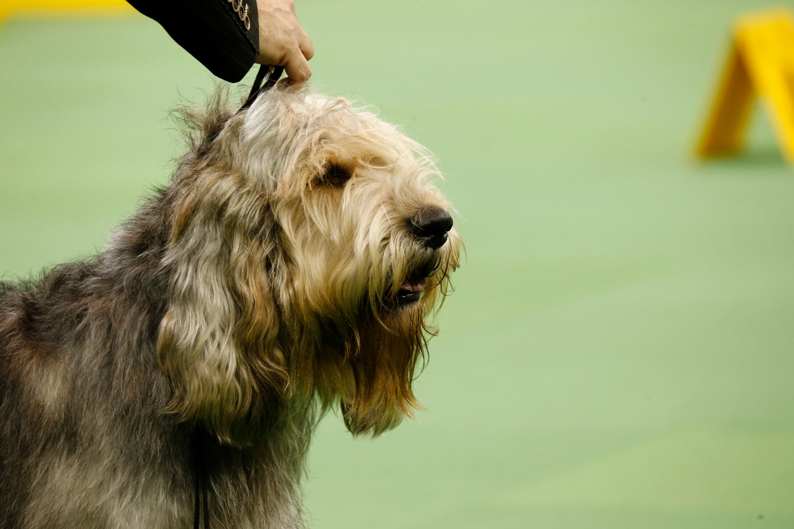
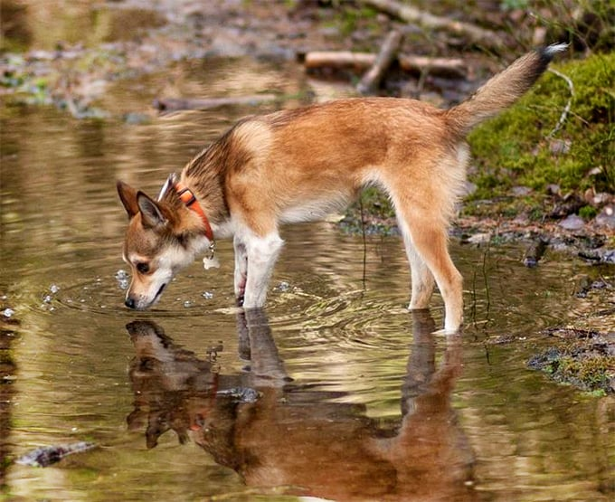
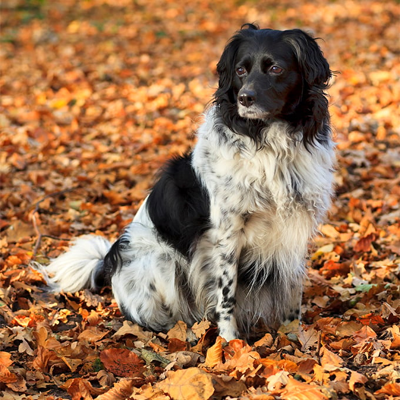

Image |
Name |
Description |
||
|  | Otterhound |
The Otterhound originates from England, bred for hunting.
In present time, they are energetic pets with a love for children and other dogs. |
||
|  | Norwegian Lundehund |
The Norwegian Lundehund is a breed with six toes on each foot being double or triple jointed.
This allowed them to be able to climb and scale cliffs for food. |
||
|  | Stabyhoun |
The Stabyhoun, just like the Otterhound, are hunting dogs.
They get along with children and other pets but are in best condition when exercised. |
||